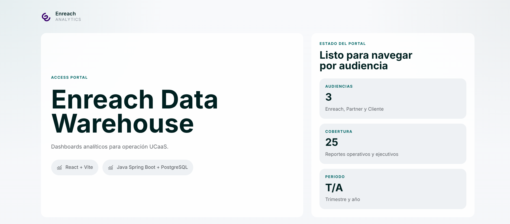

Data Warehouse & Business Intelligence
Enreach
Data Warehouse y dashboard BI para analítica de telecomunicaciones. Trabajé en la vista Enreach: indicadores ejecutivos, consultas analíticas y presentación del dashboard.
- PostgreSQL
- Pentaho Spoon
- Spring Boot
- React
- Recharts